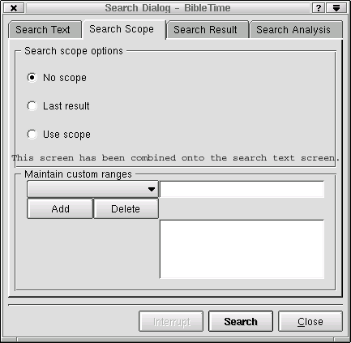

Portions instructions for Searching Documents is taken from the help files for the MS Windows (R) version of Sword
You can search in a document by right-clicking on the document name in the Main Index and selecting "Search in module(s)". By shift- or ctrl-clicking on other module names you can select more than one. Then follow the same procedure to open the search dialog. You will be searching in all of these Documents.
Search Text - In this pane enter the text string to be searched for, and set search properties. "Regular Expression" uses standard regexp syntax to refine the search.
Enter one or more words, or partial words, (separate words, or partials, with a space), a phrase, or pattern (Regular Expression) to search for. How the data entered in the Input Field is used will depend on which button is marked for Mult, Phrase and Regular Expression, and also if Case Sensitive is marked.
 | Drag & Drop Works Here, you can drop verses and bookmarks into the text entry box. You can also copy and paste text into the entry box. |
Click on the Case Sensitive check box to toggle case sensitivity on or off. If the box is marked a search will only find verse in which the found text matches also the case of the text in the input field. If the box is unmarked the search will match if the texts match but are different in case. To locate LORD but not Lord or lord mark the check box. To let LORD and Lord match lord leave the check box unmarked.
If Mult Word is marked the search will locate all lines (or verses) that have all the words, (or partials), listed in the Input Field. The position and order of the words, (or partials), in the line is not a factor. If all the words, (or partials), are in a line, in any order, even separated by other words, the line will be included in the list of found line. A search for prove cause will find Gen. 21:25, And Abraham reproved Abimelech be cause of a well of water... This is because a word that is part of another word is considered found if a word containing it is found.
If Phrase is marked the search will locate all lines (or verses) that contain what was entered in the input field, exactly as entered, including any spaces. The phrase found does not have to start or end at a word boundary. A search for now how thou ought will find 1 Timothy 3:1, ...that thou mayest know how thou oughtest to behave...
Regular expression searches provide a way to do simple or complex searches for strings that match a pattern or set of patterns (branches) separated by vertical bars |. While a pattern can be built to look for a word or phrase, a simple pattern that consists of a word does not look for only that word but for any place the string of letters that make that word are found. A search for right will return verses that contain the word right, but also righteous, righteousness, unrighteous, upright and even bright. A search for hall not is not a search for hall AND not but for the string hall not with a space between the second l and the n. The search for hall not will find occurrences of shall not.
The power of Regular Expressions is in the patterns (or templates) used to define a search. A pattern consists of ordinary characters and some special characters that are used and interpreted by a set of rules. Special characters include .\[^*$?+. Ordinary (or simple) characters are any characters that are not special. The backslash, \, is used to convert special characters to ordinary and ordinary characters to special.
Example: the pattern i. love\. will find sentences that end with his love or in love or is love followed by a period. The first period in i. love\. is a special character that means allow any character in this position. The backslash in i. love\. means that the period following it is not to be considered a special character, but is an ordinary period.
. The period matches any character. See Details
* The asterisk matches 0 or more characters of the preceding: set, character or indicated character. See Details
+ The plus sign matches 1 or more characters of the preceding: set, character or indicated character. See Details
? The question mark matches 0 or 1 character of the preceding: set, character or indicated character. See Details
[ ] Square brackets match any one of the characters specified inside [ ]. See Details
^ A caret as the first character inside [ ] means NOT. See Details
^ A caret beginning a pattern anchors the beginning of a line. See Details
$ A dollar at the end of a pattern anchors the end of a line. See Details
| A vertical bar means logical OR. See Details
( ) Parentheses enclose expressions for grouping. Not supported!
\ A backslash can be used prior to any special character to match that character. See Details
\ A backslash can be used prior to an ordinary character to make it a special character. See Details
The Period . will match any single character even a space or other non-alphabet character. s.t matches sit, set, sot, etc., which could be located in sitting, compasseth and sottish b..t matches boot, boat and beat foot.tool matches footstool and foot tool
The asterisk matches zero or more characters of the preceding: set, character or indicated character. Using a period asterisk combination .* after a commonly found pattern can cause the search to take a very long time, making the program seem to freeze. be*n matches beeen, been, ben, and bn which could locate Reuben and Shebna.
The Plus Sign matches one or more characters of the preceding: set, character or indicated character. Using a period and plus sign combination .+ after a commonly found pattern can cause the search to take a very long time, making the program seem to freeze<. be+n matches beeen, been and ben, but not bn.
The Question Mark matches zero or one character of the preceding: set, character or indicated character. be?n matches ben and bn but not been. trees? matches trees or tree.
The Square Brackets enclose a set of characters that can match. The period, asterisk, plus sign and question mark are not special inside the brackets. A minus sign can be used to indicate a range. If you want a caret ^ to be part of the range do not place it first after the left bracket or it will be a special character. To include a ] in the set make it the first (or second after a special ^) character in the set. To include a minus sign in the set make it the first (or second after a special ^) or last character in the set. s[eia]t matches set, sit, and sat, but not sot. s[eia]+t matches as above but also, seat, seet, siet, etc. [a-d] matches a, b, c, or d. [A-Z] matches any uppercase letter. [.;:?!] matches ., ;, :, ?, or ! but not a comma. [ ]^-] matches ] or ^ or -
If the Caret is the first character after the left bracket it means NOT. s[^io]t matches set, sat, etc., but not sit and sot.
If the Caret is the first character in a pattern it anchors the pattern to the start of a line. Any match must be at the beginning of a line. Because of unfiltered formatting characters in some texts, this feature does not always work, but may if a few periods are placed after the caret to account for the formatting characters. ^In the beginning matches lines that start with In the beginning. (May need to use: ^.....In the beginning)
If the Dollar Sign is the last character in a pattern it anchors the pattern to the end of a line. Any match must be at the end of a line. Because of unfiltered formatting characters in some texts, this feature does not always work, but may if a few periods are placed before the dollar sign to account for the formatting characters. Amen\.$ matches lines that end with Amen. (May need to use Amen\....$, Amen\..........$, or even Amen\....................$)
The Vertical Bar between patterns means OR. John|Peter matches John or Peter. John .*Peter|Peter .*John matches John ... Peter or Peter ... John. (.* slows a search) pain|suffering|sorrow matches pain, or suffering, or sorrow.
The use of Parentheses ( ) is not supported!
The Backslash prior to a special character indicates that the character is not being used in its special meaning, but is just to match itself. amen\. matches amen. but not ament and will not locate firmament.
The Backslash prior to an ordinary character indicates that the character is not being used to match itself, but has special meaning.
\b if use outside [ ] means word boundary. If used inside [ ] means backspace. \brighteous\b matches righteous but not unrighteous or righteousness
\B means non-word boundary. \Brighteous\B matches unrighteousness and unrighteously but not righteous, unrighteous or righteousness.
\d means digit; same as [0-9].
\D means non-digit, same as [^0-9].
\s means space.
\S means not a space.
\w means alphanumeric; same as [a-zA-Z0-9_].
\W means not alphanumeric; same as [^a-zA-Z0-9_].
Define the Scope of your search here
No Scope this turns off the search scope tab. The entire document is searched.
Last Result The new search will only search within the verses found in the previous search.
Use Scope The new search will be performed within the range specified in the maintain custom ranges portion of the search scope tab.
If No Scope is checked and a search of the KJV Bible module is done for the name, Jesus, 939 matches will result. Then if Last Resultis checked and another search is done for the title, Christ, 257 matches from the first 939 matches will remain. Then ifLast Result remains checked and another search is done for the title, Lord, 106 matches from the 257 will remain. All the remaining 106 matches will have the name, Jesus, and both the titles, Christ and Lord.
Maintain Custom Ranges - For each document selected to be searched, you can enter and delete lower and upper boundaries. Then click Add and an entry box for the range name will pop up. After entering the name, your range is added to the list of custom ranges.
The scope of a search can be set to the Entire Moduleor the Current Results. If Entire Module is checked and a search of the KJV Bible module is done for the name, Jesus, 939 matches will result. Then if Current Results is checked and another search is done for the title, Christ, 257 matches from the first 939 matches will remain. Then if Current Results remains checked and another search is done for the title, Lord, 106 matches from the 257 will remain. All the remaining 106 matches will have the name, Jesus, and both the titles, Christ and Lord.
| Drag & Drop Works Here; you can drop verse numbers, and bookmarks into the custom range entry field. You can also paste text into the entry field. |

Search Result - This tells you first, by module, how many instances of the search string were found. Double-clicking on that document will open the list of references. Clicking on a reference opens that verse up in the window below. Drag the reference and drop it on a document in the main index to open the module to that verse in a new presenter
| Drag & Drop Works Here |
| Select verse numbers and drag them to the main index to create bookmarks. |
| Select verse numbers and drop them on an unopened module in the main index to open the module and jump to the verse location (Bibles and commentaries only). |
| Select verse numbers and drag them to an open document and the document will jump to the verse location (Bibles and commentaries only). |

Search Analysis - This gives a graphic analysis of the number of instances the search string was found in each book. It can display results for all documents searched. You have the option of saving the graph as an image file on your hard drive.